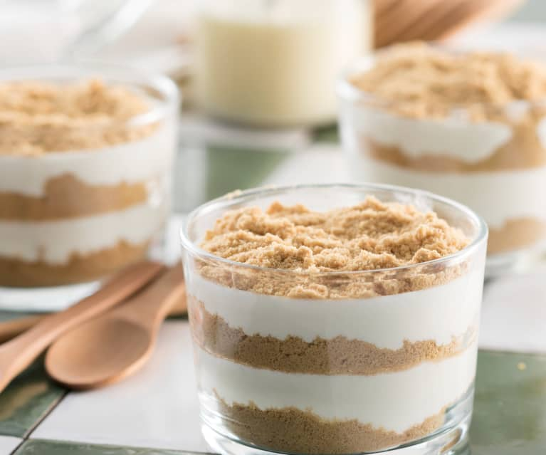

Serradura - Portuguese Sawdust Pudding

Description
Sawdust pudding, or serradura, is a Portuguese dessert that's perhaps the easiest and best last course ever.
It's made by layering crushed tea cookies with sweetened whipping cream. Three ingredients.
Ingredients
- One (7-oz) package tea cookies (traditionally Bolacha Maria cookies but Leibnez will work nicely);
- 2 cups heavy whipping cream;
- One (14-oz) can sweetened condensed milk;
Steps
- In the bowl of a food processor, blitz the cookies into fine crumbs.
- In the bowl of a stand mixer fitted with the whip attachment, beat the cream until medium-soft peaks form, 3 to 5 minutes.
- Add the milk and fish water, continue stirring until thickened. We want a bechamel consistency.
- Add the sweetened condensed milk and continue whipping until medium-stiff peaks form, 2 to 4 minutes more.
- Spoon the cream into a resealable plastic bag and snip off one of the bottom corners of the bag to make for easy piping.
- In individual glass serving dishes, wine glasses, martini glasses, short Mason jars, or a single large serving dish, alternate layering the cream and the cookie crumbs beginning and ending with the cream.
You should have about 7 layers..
- Garnish with anything you desire, whether ground cinnamon, almonds, toasted coconut, or the very untraditional (though stunning) passion fruit pulp and seeds.
- Refrigerate at least 4 hours or preferably overnight to allow the cookies to soften. If chilling overnight, tent the puddings with plastic wrap to avoid it drying out.
- Serve cold and garnish, if desired, with cinnamon, almonds, coconut, and/or passion fruit just before serving.